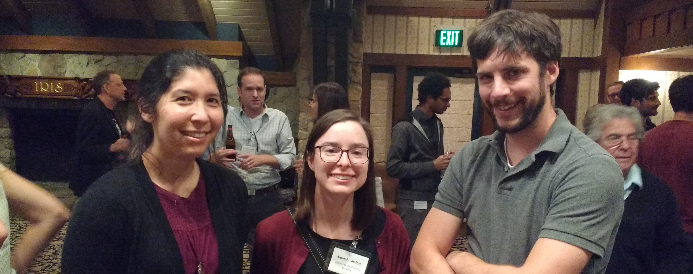

New preprint: Cofactor selectivity in methylmalonyl-CoA mutase, a model cobamide-dependent enzyme
Check out our new preprint on bioRxiv by Olga M Sokolovskaya, Kenny C Mok, Jong Duk Park, Jennifer L A Tran, Kathryn A Quanstrom, and Michiko E Taga.
Kris Kennedy presented at WCBP 2018!

Grad student Kris Kennedy presented at this year's West Coast Bacterial Physiologists meeting! See him and other members of the Taga Lab December 14-16 in Asilomar!
Welcome to rotation student Luis!
Luis Valentin-Alvarado joins the Taga lab for a rotation in the PMB department. Welcome Luis!
Article published at ISMEJ
Our paper, Uneven distribution of cobamide biosynthesis and dependence in bacteria predicted by comparative genomics, is now online at ISME J.
Taga Lab at LAMG 2018
Past and present members of the Taga lab presented at the LAMG 2018 conference.
Taga Lab at the PMB Retreat
Members of the Taga lab attended the 2018 Plant and Microbial Biology Department Retreat. Graduate student Amanda Shelton won second place for her talk, and postdoc Zach Hallberg presented a poster.
Welcome to new undergrad Victoria!
Fall 2018: Victoria Innocent joins the lab as an undergraduate researcher.
Taga Lab at 2018 GRC Tetrapyrroles
Members of the Taga lab are attending the 2018 Gordon Research Conference on the Chemistry and Biology of Tetrapyrroles. Graduate students Kris Kennedy and Olga Sokolovskaya are presenting posters, and Professor Michi Taga is giving a talk.
Contact information:
Address: 351 Koshland Hall
Berkeley, CA 94720
Email: taga@berkeley.edu
Lab Phone: (510)-643-5466
Office Phone: (510)-642-6391
Fax: (510)-642-4995